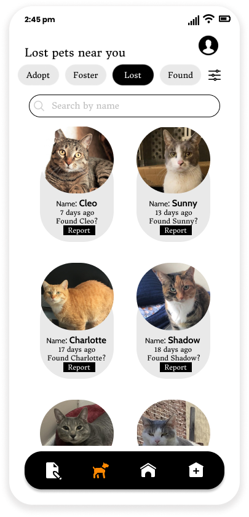
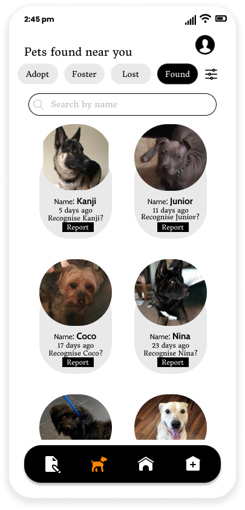

Centralized Animal Rescue
Documentation
Lost and Found Pets in the Neighborhood
Centralized Animal Rescue hosts information about lost and found pets in the user's neighborhood. These are "Lost" and "Found" reports filed by other users. Users can look-up all found reports when they lose their pet and look-up all lost reports when they find a pet. Clicking on report will take them to the "Report" screen where they can file the respective report.
 